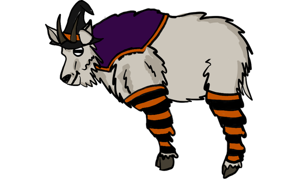
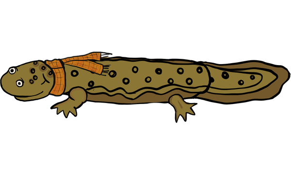
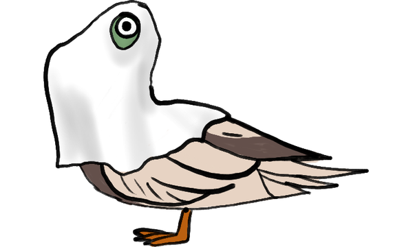
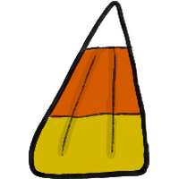
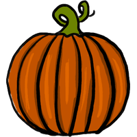

Nanny
Nanny🎃 Halloween Pack
$2.99A witch outfit, a cozy scarf, and a ghost sheet for every hellbuddy, plus candy corn and pumpkins to feed them.





Candy corn and pumpkinAfter you buy, right-click your hellbuddy, choose Redeem Code…, and paste the license key from your receipt. Works on up to 5 of your computers.